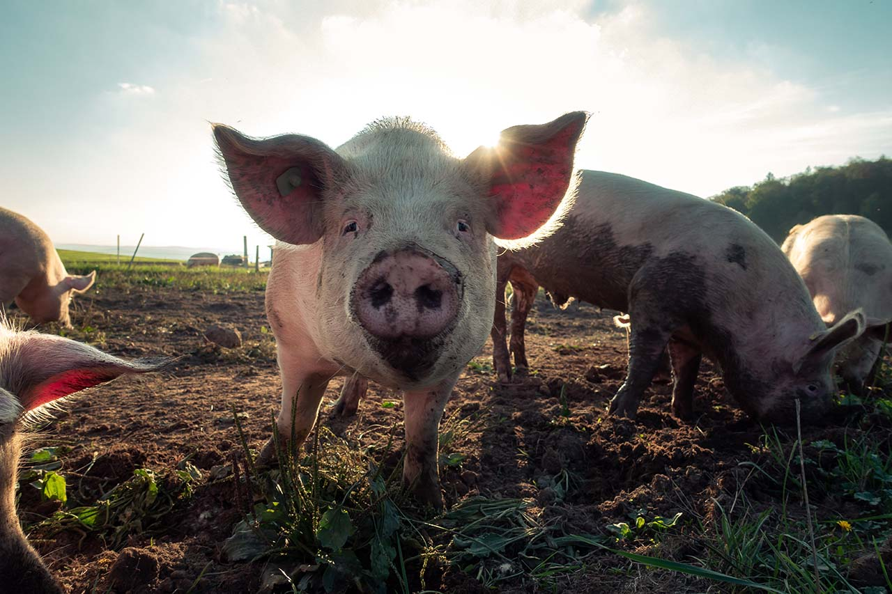

{% if site.posts.size == 0 %}

  <h2>Pas d'articles trouvés.</h2>

{% else %}

  {% for post in site.posts limit:1 %}

      <p style="font-family:Bebas Neue;font-size:120px;line-height:100px;text-align:justify;color:black;">{{ post.title }}</p>
      
      <span class="date" style="margin-bottom:5px;">
        {{ post.date | date: "%Y-%m-%d" }}
      </span>
      <div class="entry" style="color: #999;">
        {{ post.description }}
      </div>
      <a href="{{ site.baseurl }}{{ post.url }}">Lire plus...</a>

  {% endfor %}

{% endif %}



